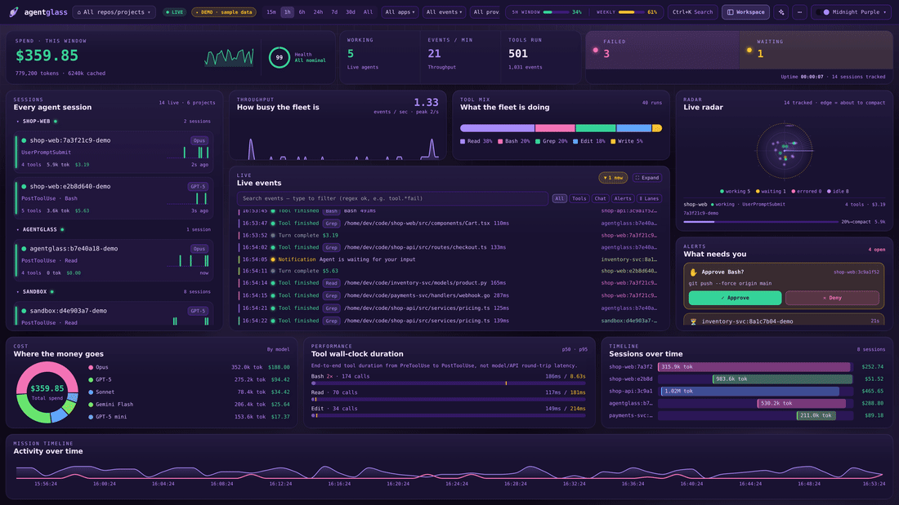

First run. The build is unsigned, so Gatekeeper quarantines it and reports the app as damaged. It is not. Right-click the app ▸ Open, or clear the flag:
xattr -dr com.apple.quarantine /Applications/agentglass.app
The combiner is dark — no WebGL here, or no JavaScript. The argument stands either way: a terminal shows you one session. agentglass shows all of them — and holds a dangerous call until a human decides. Everything below this line works without a line of script.
—
—
0s
on the glass
0
tool calls meanwhile
$0.00
spent meanwhile
0k
context consumed
1
asked permission
A HUD puts the instruments in front of the pilot so they never look down. The point is not the numbers. It is not looking away from what is flying.
You run eight agents. Your instrument is a terminal — one session, and the history dies with the tab.
Everything above this line is a simulation of the product. This is the product.

A cockpit does not give you six screens. It gives you one, and a way to change what it is. Press G, D, P, O, T or C — on your actual keyboard.
Every tool call, token and dollar. Every provider. Every project on the machine — history is there the moment you open it.
Distance from centre is context used. A contact at the edge is about to forget half of what you told it. No terminal shows you that.
Not just a display. Diffs, commits, pull requests merged, docker, a real shell, chat. One key each.
SQLite on your disk. Loopback by default. Nothing phones home. The app ships its own server.
The cockpit stays where it is — a terminal and a hunk-level diff are not things anybody drives with a thumb. The link comes with you. Your machine keeps streaming: every tool call, every token, every dollar. Most of it you never need to see. The part that stops and waits for a person leaves the desk, crosses, and lands in your hand — and your answer crosses back.
No clone. No Python. No terminal. You are reading history by line 2 — arming is only for the live layer.
From a checkout instead? git clone then python3 hooks/install_hooks.py — the forwarder lives in the repo, so that path wants Python 3. The desktop app has nothing to clone.
The version and every link below are stamped from the latest release when this page deploys — never a hand-typed guess. The server ships inside the app; there is nothing else to install, and nothing to clone.
First run. The build is unsigned, so Gatekeeper quarantines it and reports the app as damaged. It is not. Right-click the app ▸ Open, or clear the flag:
xattr -dr com.apple.quarantine /Applications/agentglass.app
First run. Mark the AppImage executable, or install the .deb:
chmod +x agentglass_*.AppImage && ./agentglass_*.AppImage
sudo apt install ./agentglass_*.deb
First run. Unsigned, so SmartScreen warns: More info ▸ Run anyway.
Known gap. The terminal panel is POSIX-only and does not work here yet (#98). Everything else runs.
Rather run it from source, or want the hooks wired for every project? git clone, bun install, bun run dev — see the quickstart. Local-first either way: SQLite on your own disk, nothing phones home, and the approval queue is persisted — a crash cannot silently auto-allow. Every installer is built by CI from a tagged commit, and every asset is on the release if you want a different one. Read SECURITY.md before you install — we mean it.
The same eight you met at the top — still going, further along than you found them.